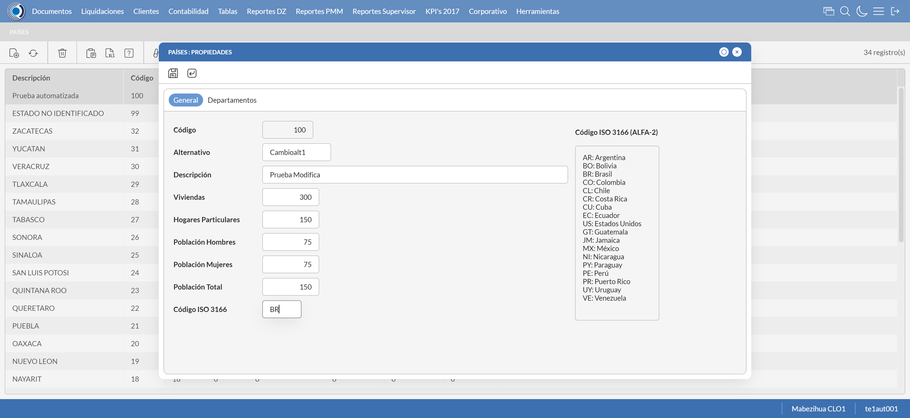

Desarrollado por : Area de Testing PWST
Fecha y hora de inicio : 2023-01-27 07:33:32
Duracion : 0:02:28.998888
Resultado : Total 8，Correctos 7 ，Errores 1 ，Taza de resultado 87.50%
Resumen 87.50% Errores 1 Fallidos 0 Correctos 7 Test realizados 8
| Caso de Prueba | Total | Correctos | Fallido | Error | Detalles | Captura del error |
| UbicacionesGeograficas.Test: Escenario 1 de Ubicaciones Geograficas | 8 | 7 | 0 | 1 | Detalles | |
test |
ft1_1: 2023-01-27 07:33:34,533 - root - INFO - Se abre el chrome
2023-01-27 07:33:35,494 - root - INFO - Entra a la URL
2023-01-27 07:33:36,140 - root - INFO - Maximiza la pantalla
Traceback (most recent call last):
File "C:\Users\PWST\AppData\Local\Programs\Python\Python311\Lib\site-packages\selenium\webdriver\remote\switch_to.py", line 87, in frame
frame_reference = self._driver.find_element(By.ID, frame_reference)
^^^^^^^^^^^^^^^^^^^^^^^^^^^^^^^^^^^^^^^^^^^^^^^^^
File "C:\Users\PWST\AppData\Local\Programs\Python\Python311\Lib\site-packages\selenium\webdriver\remote\webdriver.py", line 856, in find_element
return self.execute(Command.FIND_ELEMENT, {
^^^^^^^^^^^^^^^^^^^^^^^^^^^^^^^^^^^^
File "C:\Users\PWST\AppData\Local\Programs\Python\Python311\Lib\site-packages\selenium\webdriver\remote\webdriver.py", line 429, in execute
self.error_handler.check_response(response)
File "C:\Users\PWST\AppData\Local\Programs\Python\Python311\Lib\site-packages\selenium\webdriver\remote\errorhandler.py", line 243, in check_response
raise exception_class(message, screen, stacktrace)
selenium.common.exceptions.NoSuchElementException: Message: no such element: Unable to locate element: {"method":"css selector","selector":"[id="mainFrame"]"}
(Session info: chrome=109.0.5414.120)
Stacktrace:
Backtrace:
(No symbol) [0x00E56643]
(No symbol) [0x00DEBE21]
(No symbol) [0x00CEDA9D]
(No symbol) [0x00D21342]
(No symbol) [0x00D2147B]
(No symbol) [0x00D58DC2]
(No symbol) [0x00D3FDC4]
(No symbol) [0x00D56B09]
(No symbol) [0x00D3FB76]
(No symbol) [0x00D149C1]
(No symbol) [0x00D15E5D]
GetHandleVerifier [0x010CA142+2497106]
GetHandleVerifier [0x010F85D3+2686691]
GetHandleVerifier [0x010FBB9C+2700460]
GetHandleVerifier [0x00F03B10+635936]
(No symbol) [0x00DF4A1F]
(No symbol) [0x00DFA418]
(No symbol) [0x00DFA505]
(No symbol) [0x00E0508B]
BaseThreadInitThunk [0x764E00F9+25]
RtlGetAppContainerNamedObjectPath [0x77357BBE+286]
RtlGetAppContainerNamedObjectPath [0x77357B8E+238]
During handling of the above exception, another exception occurred:
Traceback (most recent call last):
File "C:\Users\PWST\AppData\Local\Programs\Python\Python311\Lib\site-packages\selenium\webdriver\remote\switch_to.py", line 90, in frame
frame_reference = self._driver.find_element(By.NAME, frame_reference)
^^^^^^^^^^^^^^^^^^^^^^^^^^^^^^^^^^^^^^^^^^^^^^^^^^^
File "C:\Users\PWST\AppData\Local\Programs\Python\Python311\Lib\site-packages\selenium\webdriver\remote\webdriver.py", line 856, in find_element
return self.execute(Command.FIND_ELEMENT, {
^^^^^^^^^^^^^^^^^^^^^^^^^^^^^^^^^^^^
File "C:\Users\PWST\AppData\Local\Programs\Python\Python311\Lib\site-packages\selenium\webdriver\remote\webdriver.py", line 429, in execute
self.error_handler.check_response(response)
File "C:\Users\PWST\AppData\Local\Programs\Python\Python311\Lib\site-packages\selenium\webdriver\remote\errorhandler.py", line 243, in check_response
raise exception_class(message, screen, stacktrace)
selenium.common.exceptions.NoSuchElementException: Message: no such element: Unable to locate element: {"method":"css selector","selector":"[name="mainFrame"]"}
(Session info: chrome=109.0.5414.120)
Stacktrace:
Backtrace:
(No symbol) [0x00E56643]
(No symbol) [0x00DEBE21]
(No symbol) [0x00CEDA9D]
(No symbol) [0x00D21342]
(No symbol) [0x00D2147B]
(No symbol) [0x00D58DC2]
(No symbol) [0x00D3FDC4]
(No symbol) [0x00D56B09]
(No symbol) [0x00D3FB76]
(No symbol) [0x00D149C1]
(No symbol) [0x00D15E5D]
GetHandleVerifier [0x010CA142+2497106]
GetHandleVerifier [0x010F85D3+2686691]
GetHandleVerifier [0x010FBB9C+2700460]
GetHandleVerifier [0x00F03B10+635936]
(No symbol) [0x00DF4A1F]
(No symbol) [0x00DFA418]
(No symbol) [0x00DFA505]
(No symbol) [0x00E0508B]
BaseThreadInitThunk [0x764E00F9+25]
RtlGetAppContainerNamedObjectPath [0x77357BBE+286]
RtlGetAppContainerNamedObjectPath [0x77357B8E+238]
During handling of the above exception, another exception occurred:
Traceback (most recent call last):
File "C:\xampp\htdocs\Versiones\automatizaciones\AutoPWST\01UG\testCase\UbicacionesGeograficas.py", line 36, in test
self.driver.switch_to.frame("mainFrame")
File "C:\Users\PWST\AppData\Local\Programs\Python\Python311\Lib\site-packages\selenium\webdriver\remote\switch_to.py", line 92, in frame
raise NoSuchFrameException(frame_reference)
selenium.common.exceptions.NoSuchFrameException: Message: mainFrame
|
|
||||
test_000: Ingresa a la base de datos |
pt1_2: 2023-01-27 07:33:39,247 - root - INFO - Escribe el usuario
2023-01-27 07:33:39,339 - root - INFO - Escribe la contraseña
2023-01-27 07:33:39,417 - root - INFO - Se dio clic en el boton ingresar
2023-01-27 07:33:40,133 - root - INFO - Ejecutar Enterprise
2023-01-27 07:33:44,183 - root - INFO - Cambia entre pestañas
|
|
||||
test_001: Abre menu y ejecuta pantalla |
pt1_3: 2023-01-27 07:34:28,088 - root - INFO - Abre la pantalla de Paises
2023-01-27 07:34:28,640 - root - INFO - La pantalla ejecutada es Paises.
2023-01-27 07:34:28,641 - root - INFO - Captura: C:\xampp\htdocs\Versiones\automatizaciones\AutoPWST\01UG\report\img screen：20230127_07_34_28.png
2023-01-27 07:34:39,337 - root - INFO - Se presiona el boton 'Nuevo', para crear un nuevo registro.
|
|||||
test_002: Abre la ventana de nuevo y crear un registro |
pt1_4: 2023-01-27 07:34:39,880 - root - INFO - Se abrio la pantalla para el ingreso de un registro nuevo.
2023-01-27 07:34:39,929 - root - INFO - El campo 'Codigo' si se encuentra visible.
2023-01-27 07:34:39,969 - root - INFO - El campo 'Alternativo' si se encuentra visible.
2023-01-27 07:34:39,999 - root - INFO - El campo 'Descrición' si se encuentra visible.
2023-01-27 07:34:40,039 - root - INFO - El campo 'Viviendas' si se encuentra visible.
2023-01-27 07:34:40,078 - root - INFO - El campo 'Hogares Particulares' si se encuentra visible.
2023-01-27 07:34:40,110 - root - INFO - El campo 'Población Hombres' si se encuentra visible.
2023-01-27 07:34:40,150 - root - INFO - El campo 'Población Mujeres' si se encuentra visible.
2023-01-27 07:34:40,190 - root - INFO - El campo 'Población Total' si se encuentra visible.
2023-01-27 07:34:40,220 - root - INFO - El campo 'Código ISO 3166' si se encuentra visible.
2023-01-27 07:34:40,293 - root - INFO - Ingresa el codigo del nuevo registro
2023-01-27 07:34:40,393 - root - INFO - Ingresa el codigo alternativo del nuevo registro
2023-01-27 07:34:40,500 - root - INFO - Ingresa la descripción del nuevo registro
2023-01-27 07:34:40,578 - root - INFO - Ingresa el número de viviendas del nuevo registro
2023-01-27 07:34:40,662 - root - INFO - Ingresa el número de hogares particulares del nuevo registro
2023-01-27 07:34:40,751 - root - INFO - Ingresa el número de Población de hombres del nuevo registro
2023-01-27 07:34:40,827 - root - INFO - Ingresa el número de Población de mujeres del nuevo registro
2023-01-27 07:34:40,900 - root - INFO - Ingresa el número de Población Total del nuevo registro
2023-01-27 07:34:40,989 - root - INFO - Ingresa el Codigo ISO del nuevo registro
2023-01-27 07:34:42,000 - root - INFO - Captura: C:\xampp\htdocs\Versiones\automatizaciones\AutoPWST\01UG\report\img screen：20230127_07_34_42.png
2023-01-27 07:34:43,731 - root - INFO - Se hace el cambio de pestaña para continuar con el registro nuevo
2023-01-27 07:34:44,419 - root - INFO - Se presiona el boton 'Nuevo', para crear un nuevo registro.
2023-01-27 07:34:44,985 - root - INFO - El campo 'Codigo' si se encuentra visible.
2023-01-27 07:34:45,021 - root - INFO - El campo 'Alternativo' si se encuentra visible.
2023-01-27 07:34:45,050 - root - INFO - El campo 'Descrición' si se encuentra visible.
2023-01-27 07:34:45,090 - root - INFO - El campo 'Impuesto' si se encuentra visible.
2023-01-27 07:34:45,127 - root - INFO - El campo 'Viviendas' si se encuentra visible.
2023-01-27 07:34:45,162 - root - INFO - El campo 'Hogares Particulares' si se encuentra visible.
2023-01-27 07:34:45,196 - root - INFO - El campo 'Población Hombres' si se encuentra visible.
2023-01-27 07:34:45,226 - root - INFO - El campo 'Población Mujeres' si se encuentra visible.
2023-01-27 07:34:45,266 - root - INFO - El campo 'Población Total' si se encuentra visible.
2023-01-27 07:34:45,332 - root - INFO - Ingresa el codigo del nuevo registro
2023-01-27 07:34:45,422 - root - INFO - Ingresa el codigo alternativo del nuevo registro
2023-01-27 07:34:45,512 - root - INFO - Ingresa la descripción del nuevo registro
2023-01-27 07:34:46,729 - root - INFO - Ingresa el número de viviendas del nuevo registro
2023-01-27 07:34:46,890 - root - INFO - Ingresa el número de hogares particulares del nuevo registro
2023-01-27 07:34:47,025 - root - INFO - Ingresa el número de Población de hombres del nuevo registro
2023-01-27 07:34:47,178 - root - INFO - Ingresa el número de Población de mujeres del nuevo registro
2023-01-27 07:34:47,283 - root - INFO - Ingresa el número de Población Total del nuevo registro
2023-01-27 07:34:47,391 - root - INFO - Se hace el cambio de pestaña para continuar con el registro nuevo
2023-01-27 07:34:48,044 - root - INFO - Se presiona el boton 'Nuevo', para crear un nuevo registro.
2023-01-27 07:34:48,648 - root - INFO - El campo 'Localidad' si se encuentra visible.
2023-01-27 07:34:48,687 - root - INFO - El campo 'Alternativo' si se encuentra visible.
2023-01-27 07:34:48,756 - root - INFO - El campo 'Descrición' si se encuentra visible.
2023-01-27 07:34:48,799 - root - INFO - El campo 'Viviendas' si se encuentra visible.
2023-01-27 07:34:48,859 - root - INFO - El campo 'Hogares Particulares' si se encuentra visible.
2023-01-27 07:34:48,899 - root - INFO - El campo 'Población Hombres' si se encuentra visible.
2023-01-27 07:34:48,929 - root - INFO - El campo 'Población Mujeres' si se encuentra visible.
2023-01-27 07:34:48,969 - root - INFO - El campo 'Población Total' si se encuentra visible.
2023-01-27 07:34:49,023 - root - INFO - Ingresa el codigo del nuevo registro
2023-01-27 07:34:49,196 - root - INFO - Ingresa el codigo alternativo del nuevo registro
2023-01-27 07:34:49,363 - root - INFO - Ingresa la descripción del nuevo registro
2023-01-27 07:34:49,508 - root - INFO - Ingresa el número de viviendas del nuevo registro
2023-01-27 07:34:49,643 - root - INFO - Ingresa el número de hogares particulares del nuevo registro
2023-01-27 07:34:49,834 - root - INFO - Ingresa el número de Población de hombres del nuevo registro
2023-01-27 07:34:49,964 - root - INFO - Ingresa el número de Población de mujeres del nuevo registro
2023-01-27 07:34:50,109 - root - INFO - Ingresa el número de Población Total del nuevo registro
2023-01-27 07:34:50,219 - root - INFO - Se hace el cambio de pestaña para continuar con el registro nuevo
2023-01-27 07:34:50,848 - root - INFO - Se presiona el boton 'Nuevo', para crear un nuevo registro.
2023-01-27 07:34:51,464 - root - INFO - El campo 'Código' si se encuentra visible.
2023-01-27 07:34:51,498 - root - INFO - El campo 'Alternativo' si se encuentra visible.
2023-01-27 07:34:51,538 - root - INFO - El campo 'Descrición' si se encuentra visible.
2023-01-27 07:34:51,568 - root - INFO - El campo 'Viviendas' si se encuentra visible.
2023-01-27 07:34:51,632 - root - INFO - El campo 'Hogares Particulares' si se encuentra visible.
2023-01-27 07:34:51,681 - root - INFO - El campo 'Población Hombres' si se encuentra visible.
2023-01-27 07:34:51,721 - root - INFO - El campo 'Población Mujeres' si se encuentra visible.
2023-01-27 07:34:51,761 - root - INFO - El campo 'Población Total' si se encuentra visible.
2023-01-27 07:34:51,837 - root - INFO - Ingresa el codigo del nuevo registro
2023-01-27 07:34:51,970 - root - INFO - Ingresa el codigo alternativo del nuevo registro
2023-01-27 07:34:52,185 - root - INFO - Ingresa la descripción del nuevo registro
2023-01-27 07:34:52,340 - root - INFO - Ingresa el número de viviendas del nuevo registro
2023-01-27 07:34:52,492 - root - INFO - Ingresa el número de hogares particulares del nuevo registro
2023-01-27 07:34:52,623 - root - INFO - Ingresa el número de Población de hombres del nuevo registro
2023-01-27 07:34:52,776 - root - INFO - Ingresa el número de Población de mujeres del nuevo registro
2023-01-27 07:34:52,937 - root - INFO - Ingresa el número de Población Total del nuevo registro
2023-01-27 07:34:53,107 - root - INFO - Se da clic en el boton Guardar; se debe crear un nuevo registro.
2023-01-27 07:34:53,495 - root - INFO - Se da clic en el boton Guardar; se debe crear un nuevo registro.
2023-01-27 07:34:53,693 - root - INFO - Se hace el cambio de pestaña para continuar con el registro nuevo
2023-01-27 07:34:54,345 - root - INFO - Se presiona el boton 'Nuevo', para crear un nuevo registro.
2023-01-27 07:34:54,985 - root - INFO - El campo 'Artículo' si se encuentra visible.
2023-01-27 07:34:55,032 - root - INFO - El campo 'Impuesto' si se encuentra visible.
2023-01-27 07:34:58,151 - root - INFO - Se da clic en el boton Guardar; se debe crear un nuevo registro.
2023-01-27 07:34:58,444 - root - INFO - Se da clic en el boton Guardar; se debe crear un nuevo registro.
2023-01-27 07:34:58,777 - root - INFO - Se da clic en el boton Guardar; se debe crear un nuevo registro.
|
|||||
test_003: Repetir el registro creado anteriormente |
pt1_5: 2023-01-27 07:34:59,153 - root - INFO - Se presiona el boton 'Refrescar', para crear un nuevo registro igual al anterior.
2023-01-27 07:34:59,467 - root - INFO - Se presiona el boton 'Nuevo', para crear un nuevo registro igual al anterior.
2023-01-27 07:35:00,077 - root - INFO - Ingresa el codigo del nuevo registro
2023-01-27 07:35:00,177 - root - INFO - Ingresa el codigo alternativo del nuevo registro
2023-01-27 07:35:00,285 - root - INFO - Ingresa la descripción del nuevo registro
2023-01-27 07:35:00,369 - root - INFO - Ingresa el número de viviendas del nuevo registro
2023-01-27 07:35:00,452 - root - INFO - Ingresa el número de hogares particulares del nuevo registro
2023-01-27 07:35:00,565 - root - INFO - Ingresa el número de Población de hombres del nuevo registro
2023-01-27 07:35:00,643 - root - INFO - Ingresa el número de Población de mujeres del nuevo registro
2023-01-27 07:35:00,718 - root - INFO - Ingresa el número de Población Total del nuevo registro
2023-01-27 07:35:00,807 - root - INFO - Ingresa el Codigo ISO del nuevo registro
2023-01-27 07:35:01,815 - root - INFO - Captura: C:\xampp\htdocs\Versiones\automatizaciones\AutoPWST\01UG\report\img screen：20230127_07_35_01.png
2023-01-27 07:35:03,932 - root - INFO - Se hace el cambio de pestaña para continuar con el registro nuevo
2023-01-27 07:35:04,076 - root - INFO - Se da clic en el boton Guardar; se debe crear un nuevo registro.
2023-01-27 07:35:05,078 - root - INFO - Captura: C:\xampp\htdocs\Versiones\automatizaciones\AutoPWST\01UG\report\img screen：20230127_07_35_05.png
2023-01-27 07:35:11,233 - root - INFO - Se presiona el boton 'Cerrar', para cerrar el mensaje de duplicidad de llave primaria
2023-01-27 07:35:12,235 - root - INFO - Captura: C:\xampp\htdocs\Versiones\automatizaciones\AutoPWST\01UG\report\img screen：20230127_07_35_12.png
2023-01-27 07:35:13,376 - root - INFO - Se presiona el boton 'Cerrar', para cerrar el mensaje de duplicidad de llave primaria
2023-01-27 07:35:13,548 - root - INFO - Se presiona el boton 'Cerrar', para cerrar la ventana
|
|||||
test_004: Modificar el registro |
pt1_6: 2023-01-27 07:35:13,718 - root - INFO - Se presiona el boton 'Refrescar', para crear un nuevo registro igual al anterior.
2023-01-27 07:35:15,277 - root - INFO - Se presiona el boton 'Codigo', para buscar un nuevo registro y poder modificarlo.
2023-01-27 07:35:17,024 - root - INFO - Se da clic en el registro creado, para proceder a modificarlo.
2023-01-27 07:35:17,663 - root - INFO - Ingresa el codigo alternativo del nuevo registro
2023-01-27 07:35:17,801 - root - INFO - Ingresa la descripción del nuevo registro
2023-01-27 07:35:17,908 - root - INFO - Ingresa el número de viviendas del nuevo registro
2023-01-27 07:35:18,022 - root - INFO - Ingresa el número de hogares particulares del nuevo registro
2023-01-27 07:35:18,139 - root - INFO - Ingresa el número de Población de hombres del nuevo registro
2023-01-27 07:35:18,245 - root - INFO - Ingresa el número de Población de mujeres del nuevo registro
2023-01-27 07:35:18,361 - root - INFO - Ingresa el número de Población Total del nuevo registro
2023-01-27 07:35:18,487 - root - INFO - Ingresa el Codigo ISO del nuevo registro
2023-01-27 07:35:19,489 - root - INFO - Captura: C:\xampp\htdocs\Versiones\automatizaciones\AutoPWST\01UG\report\img screen：20230127_07_35_19.png
2023-01-27 07:35:21,240 - root - INFO - Se hace el cambio de pestaña para continuar con el registro nuevo
2023-01-27 07:35:22,483 - root - INFO - Se da clic en el registro creado, para proceder a modificarlo.
2023-01-27 07:35:23,148 - root - INFO - Ingresa el codigo alternativo del nuevo registro
2023-01-27 07:35:23,336 - root - INFO - Ingresa la descripción del nuevo registro
2023-01-27 07:35:24,764 - root - INFO - Ingresa el número de viviendas del nuevo registro
2023-01-27 07:35:24,929 - root - INFO - Ingresa el número de hogares particulares del nuevo registro
2023-01-27 07:35:25,120 - root - INFO - Ingresa el número de Población de hombres del nuevo registro
2023-01-27 07:35:25,280 - root - INFO - Ingresa el número de Población de mujeres del nuevo registro
2023-01-27 07:35:25,435 - root - INFO - Ingresa el número de Población Total del nuevo registro
2023-01-27 07:35:25,561 - root - INFO - Se hace el cambio de pestaña para continuar con el registro nuevo
2023-01-27 07:35:26,811 - root - INFO - Se da clic en el registro creado, para proceder a modificarlo.
2023-01-27 07:35:27,515 - root - INFO - Ingresa el codigo alternativo del nuevo registro
2023-01-27 07:35:27,743 - root - INFO - Ingresa la descripción del nuevo registro
2023-01-27 07:35:27,956 - root - INFO - Ingresa el número de viviendas del nuevo registro
2023-01-27 07:35:28,150 - root - INFO - Ingresa el número de hogares particulares del nuevo registro
2023-01-27 07:35:28,347 - root - INFO - Ingresa el número de Población de hombres del nuevo registro
2023-01-27 07:35:28,542 - root - INFO - Ingresa el número de Población de mujeres del nuevo registro
2023-01-27 07:35:28,798 - root - INFO - Ingresa el número de Población Total del nuevo registro
2023-01-27 07:35:28,927 - root - INFO - Se hace el cambio de pestaña para continuar con el registro nuevo
2023-01-27 07:35:30,124 - root - INFO - Se da clic en el registro creado, para proceder a modificarlo.
2023-01-27 07:35:30,867 - root - INFO - Ingresa el codigo alternativo del nuevo registro
2023-01-27 07:35:31,119 - root - INFO - Ingresa la descripción del nuevo registro
2023-01-27 07:35:31,342 - root - INFO - Ingresa el número de viviendas del nuevo registro
2023-01-27 07:35:31,536 - root - INFO - Ingresa el número de hogares particulares del nuevo registro
2023-01-27 07:35:31,744 - root - INFO - Ingresa el número de Población de hombres del nuevo registro
2023-01-27 07:35:31,953 - root - INFO - Ingresa el número de Población de mujeres del nuevo registro
2023-01-27 07:35:32,199 - root - INFO - Ingresa el número de Población Total del nuevo registro
2023-01-27 07:35:32,382 - root - INFO - Se da clic en el boton Guardar; se debe crear un nuevo registro.
2023-01-27 07:35:32,575 - root - INFO - Se da clic en el boton Guardar; se debe crear un nuevo registro.
2023-01-27 07:35:32,931 - root - INFO - Se hace el cambio de pestaña para continuar con el registro nuevo
2023-01-27 07:35:34,109 - root - INFO - Se da clic en el registro creado, para proceder a modificarlo.
2023-01-27 07:35:37,662 - root - INFO - Se da clic en el boton Guardar; se debe crear un nuevo registro.
2023-01-27 07:35:38,094 - root - INFO - Se da clic en el boton Guardar; se debe crear un nuevo registro.
2023-01-27 07:35:38,403 - root - INFO - Se da clic en el boton Guardar; se debe modificar la informacion del registro.
|
 | ||||
test_005: Eliminar el registro creado |
pt1_7: 2023-01-27 07:35:38,695 - root - INFO - Se presiona el boton 'Refrescar', para proceder a eliminar el registro.
2023-01-27 07:35:40,484 - root - INFO - Se da clic en el registro creado, para proceder a eliminarlo.
2023-01-27 07:35:41,155 - root - INFO - Se hace el cambio de pestaña para continuar con el registro nuevo
2023-01-27 07:35:42,390 - root - INFO - Se da clic en el registro creado, para proceder a modificarlo.
2023-01-27 07:35:43,037 - root - INFO - Se hace el cambio de pestaña para continuar con el registro nuevo
2023-01-27 07:35:44,288 - root - INFO - Se da clic en el registro creado, para proceder a modificarlo.
2023-01-27 07:35:44,888 - root - INFO - Se hace el cambio de pestaña para continuar con el registro nuevo
2023-01-27 07:35:46,102 - root - INFO - Se da clic en el registro creado, para proceder a modificarlo.
2023-01-27 07:35:46,195 - root - INFO - Se presiona el boton 'Eliminar', para eliminar el registro.
2023-01-27 07:35:46,459 - root - INFO - Se da clic en el boton Guardar; se debe crear un nuevo registro.
2023-01-27 07:35:47,038 - root - INFO - Se da clic en el boton Guardar; se debe crear un nuevo registro.
2023-01-27 07:35:47,397 - root - INFO - Se da clic en el boton Guardar; se debe modificar la informacion del registro.
2023-01-27 07:35:48,051 - root - INFO - Se da clic en el registro creado, para proceder a eliminarlo.
2023-01-27 07:35:48,747 - root - INFO - Se hace el cambio de pestaña para continuar con el registro nuevo
2023-01-27 07:35:49,989 - root - INFO - Se da clic en el registro creado, para proceder a modificarlo.
2023-01-27 07:35:50,593 - root - INFO - Se hace el cambio de pestaña para continuar con el registro nuevo
2023-01-27 07:35:51,768 - root - INFO - Se da clic en el registro creado, para proceder a modificarlo.
2023-01-27 07:35:51,875 - root - INFO - Se presiona el boton 'Eliminar', para eliminar el registro.
2023-01-27 07:35:52,059 - root - INFO - Se hace el cambio de pestaña para continuar con el registro nuevo
2023-01-27 07:35:53,233 - root - INFO - Se da clic en el registro creado, para proceder a modificarlo.
2023-01-27 07:35:53,346 - root - INFO - Se presiona el boton 'Eliminar', para eliminar el registro.
2023-01-27 07:35:53,516 - root - INFO - Se da clic en el boton Guardar; se debe crear un nuevo registro.
2023-01-27 07:35:53,827 - root - INFO - Se da clic en el boton Guardar; se debe modificar la informacion del registro.
2023-01-27 07:35:54,529 - root - INFO - Se da clic en el registro creado, para proceder a eliminarlo.
2023-01-27 07:35:55,198 - root - INFO - Se hace el cambio de pestaña para continuar con el registro nuevo
2023-01-27 07:35:56,384 - root - INFO - Se da clic en el registro creado, para proceder a modificarlo.
2023-01-27 07:35:56,503 - root - INFO - Se presiona el boton 'Eliminar', para eliminar el registro.
2023-01-27 07:35:56,638 - root - INFO - Se da clic en el boton Guardar; se debe modificar la informacion del registro.
2023-01-27 07:35:57,040 - root - INFO - Se presiona el boton 'Eliminar', para eliminar el registro.
2023-01-27 07:35:58,041 - root - INFO - Captura: C:\xampp\htdocs\Versiones\automatizaciones\AutoPWST\01UG\report\img screen：20230127_07_35_58.png
2023-01-27 07:35:58,659 - root - INFO - Se confirma el eliminado del registro
2023-01-27 07:35:58,978 - root - INFO - Se presiona el boton 'Refrescar', para crear un nuevo registro igual al anterior.
2023-01-27 07:35:59,293 - root - INFO - Se presiona el boton 'Cerrar', para cerrar la pantalla de Categorias Fiscales.
|
|||||
test_006: Cerrar_Navegador |
pt1_8: 2023-01-27 07:36:01,876 - root - INFO - Se cierra chrome
|
|
||||
| Caso de prueba | 8 | 7 | 0 | 1 | Taza de resultado：87.50% | |